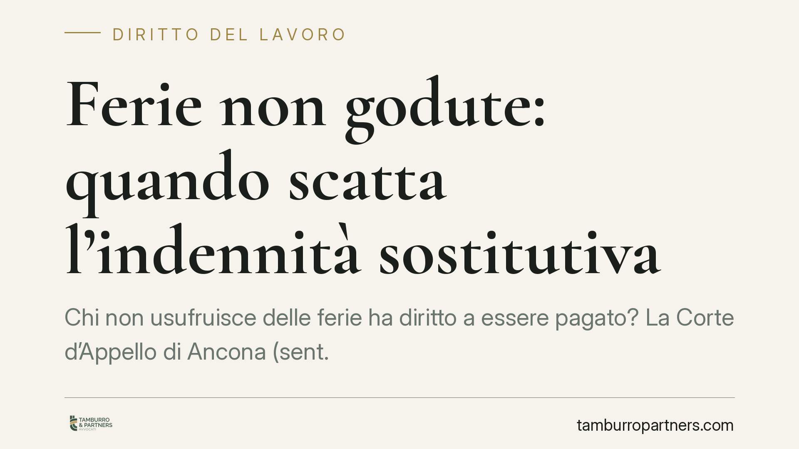

Ferie non godute: quando scatta l'indennità sostitutiva
Chi non usufruisce delle ferie ha diritto a essere pagato? La Corte d'Appello di Ancona (sent. 73/2026) chiarisce che l'indennità sostitutiva resta dovuta se il datore non prova di aver invitato formalmente il lavoratore a godere del riposo. Il principio vale anche per i dirigenti pubblici e ridisegna gli oneri probatori nel contenzioso sulle ferie residue.

Il caso e il principio affermato
La Corte d'Appello di Ancona, con la sentenza n. 73/2026, torna su una questione ricorrente nel contenzioso di lavoro: il pagamento delle ferie maturate ma non godute alla cessazione del rapporto.
Il punto decisivo riguarda la ripartizione dell'onere della prova. Secondo i giudici, spetta al datore di lavoro dimostrare di aver invitato il dipendente, in modo formale e tempestivo, a fruire delle ferie residue. In assenza di tale prova, il diritto all'indennità sostitutiva — cioè la somma che sostituisce il riposo non goduto — rimane esigibile. Il principio, precisa la Corte, opera anche a favore dei dirigenti pubblici, categoria per la quale in passato si tendeva a presumere un'autonoma capacità di organizzare le proprie assenze.
Inquadramento normativo
Il riferimento generale è l'art. 36 della Costituzione, che qualifica il diritto alle ferie come irrinunciabile. Sul piano del pubblico impiego contrattualizzato rileva l'art. 45 del D.lgs. 165/2001, in materia di trattamento economico, letto insieme alla disciplina contrattuale collettiva che regola maturazione e fruizione dei periodi di riposo.
La pronuncia si inserisce nel solco della giurisprudenza della Corte di Giustizia dell'Unione Europea (in particolare le sentenze Kreuziger e Max-Planck del 2018), secondo cui il diritto alle ferie annuali retribuite non si estingue automaticamente per il solo fatto che il lavoratore non le abbia richieste. L'estinzione presuppone che il datore abbia messo il dipendente concretamente in condizione di goderne, informandolo in modo trasparente e sollecitandolo per tempo. È un onere di diligenza attiva, non una semplice disponibilità passiva del datore.
Implicazioni pratiche
Per il datore di lavoro — pubblico o privato — la conseguenza è chiara: non basta lasciare il dipendente libero di chiedere le ferie. Occorre poter documentare di averlo invitato a fruirne e di averlo avvisato del rischio di perderle. Un piano ferie generico o una prassi tollerante non sono sufficienti a evitare l'obbligo di monetizzazione.
Per il lavoratore, e in particolare per il dirigente pubblico, cade la presunzione secondo cui l'autonomia organizzativa del ruolo comporterebbe l'automatica rinuncia alle ferie non godute. Se manca un invito formale documentato, il credito per l'indennità sostitutiva resta azionabile alla cessazione del rapporto, nei limiti della prescrizione.
Sul piano probatorio, il baricentro si sposta sull'amministrazione o sull'impresa: sarà chi resiste alla domanda a dover produrre comunicazioni, solleciti, verbali o atti che attestino l'attivazione tempestiva verso il dipendente.
Cosa fare in concreto
- Datori di lavoro: adottate un sistema di solleciti scritti individuali, con indicazione delle ferie residue, del termine per fruirne e del rischio di decadenza. Conservate le comunicazioni.
- Amministrazioni pubbliche: verificate che le procedure interne prevedano l'invito formale alla fruizione anche per il personale dirigenziale, superando l'automatismo della rinuncia.
- Lavoratori: raccogliete i prospetti delle ferie maturate e non godute e la documentazione sull'eventuale assenza di solleciti da parte del datore.
- Dirigenti pubblici: non date per scontata la perdita del diritto; valutate la sussistenza di un credito prima che maturi la prescrizione.
- Prima di agire o resistere in giudizio: fate esaminare la documentazione probatoria, perché l'esito dipende in larga misura da ciò che le parti riescono a dimostrare.
La sentenza non introduce un diritto nuovo, ma consolida un metodo: la tutela delle ferie passa dalla prova della diligenza del datore. Consigliamo, sia in fase di gestione ordinaria del personale sia in prospettiva contenziosa, di curare fin dall'inizio la tracciabilità delle comunicazioni sulle ferie residue.
Disclaimer
Contributo informativo a cura di Tamburro & Partners - Avv. Giuseppe Tamburro. Non costituisce parere legale.
Ogni storia di lavoro ha i suoi tempi.
Se gestisci HR e vuoi un confronto su contenzioso, ispezioni o licenziamenti, scrivi allo studio. Ti rispondiamo entro un giorno lavorativo.